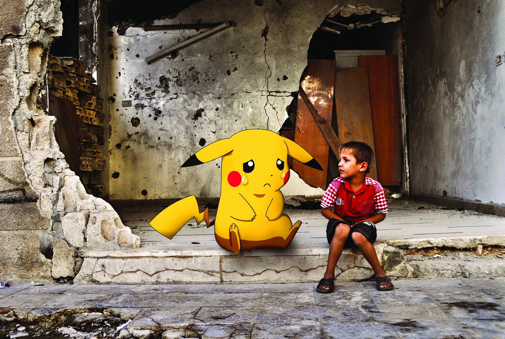

Moustafa Jano
5th February - 9th May 2017
Every Person Has Lost Something
Every person has lost something, an exhibition featuring Moustafa Jano’s digital photographic montages from war-torn Syria and his deadly dangerous escape. Disseminated globally through social media, the images provoke the uncomfortable notion: It could have been me!
Read More